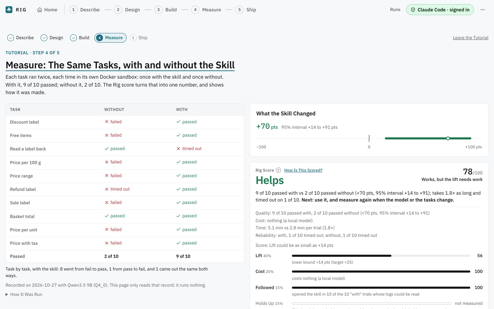
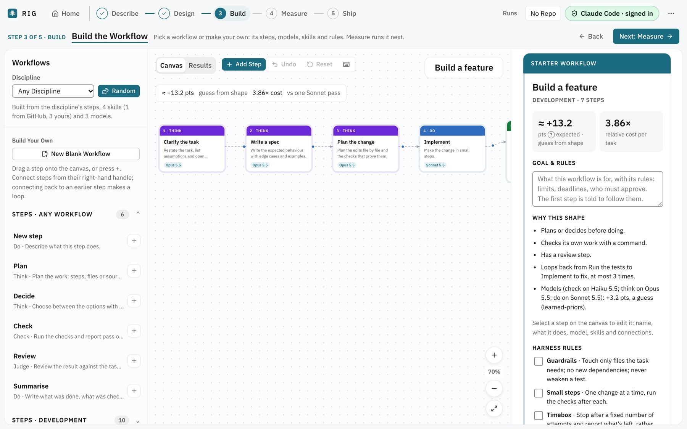
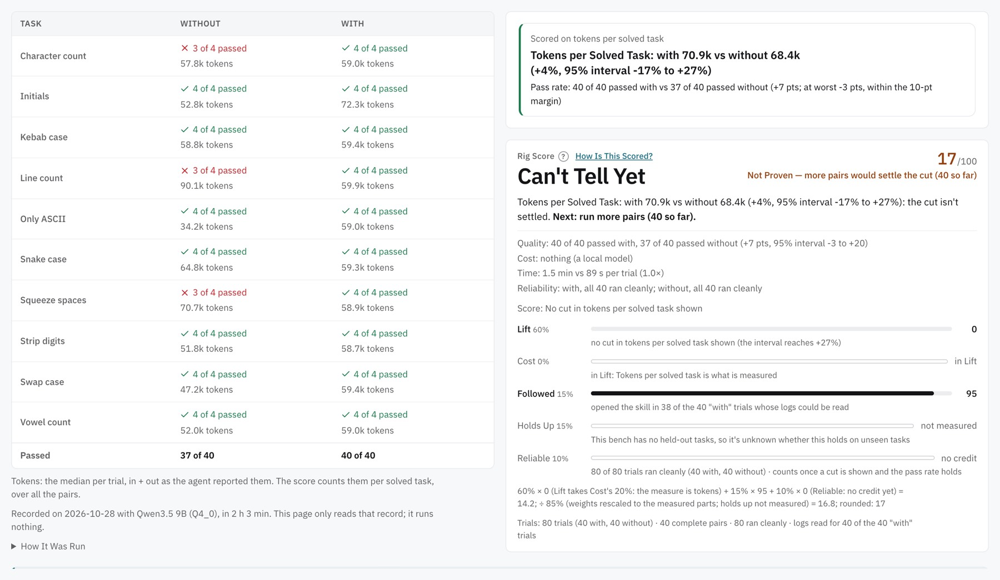

A House-Style Skill for Price Labels
- 9 of 10passed with the skill; 2 of 10 without
- +70 pts95% interval +14 to +91
- Rig 78works, but the lift needs work

Rig is a free, open-source app that runs the same coding tasks with and without a skill, hook, model or CLAUDE.md rule, each in its own sandbox, and shows what really changed, with a 95% interval.
MIT licence · runs on your machine · free on a local model
10 coding tasks, each run with and without the skill price-tags-style on Qwen3.5 9B through Claude Code, locally and for free.
The whole interval is above 0, so the skill helps. How much is still uncertain.
Drag left to count fewer tasks and watch the interval widen.
Rig runs every task twice, once with the change and once without, and compares the pairs.
A skill, a hook, an MCP server, a CLAUDE.md rule, a model, a workflow step, or a change to your code.
Each task runs with and without the change, each time in its own Docker sandbox. Checks run with no network.
Rig reports the difference with a 95% interval and a Rig score from 0 to 100. When the evidence is thin, it says so.

Both ran for free on Qwen3.5 9B through Claude Code. One skill clearly helped; the other may have cost tokens, and Rig said it couldn't tell.


Every number above comes from two files in the repo: recorded.json and tokens/recorded.json.
Each one is a single part of the agent, swapped in and out on the same tasks.
Each task runs with and without the skill's folder, and the score checks that the agent opened it.
These are measured the same way as a skill. For CLAUDE.md, the “without” side is the committed file.
The tasks run on the code before and after your change, each side exported from git. Your checkout never switches.
A run can be scored on a saving per solved task, with the pass rate as a guard against getting worse.
Build one on a canvas or start from one of 23 architectures, then run it on one of 20 built-in benches.
Ollama, LM Studio, llama.cpp, vLLM and Jan run for free, with no key and no budget.
Rig is a Python engine that serves a web app on 127.0.0.1, so nothing is hosted. You need Python 3.12 or newer, uv, Node 22 or newer, git, and Docker with Compose v2.
It works with Claude Code, Codex, OpenCode and Gemini. A paid run always shows an estimate first and stops at the budget you set.
git clone https://github.com/GokulMV/rig
cd rig/engine && uv sync
(cd ../web && npm ci && npm run build)
uv run rig doctoruv run rig serve --root ~/code/my-app
# then open http://127.0.0.1:7357